Hello Git
Follow these Hello Git instructions to quickly start using Git and TortoiseGit. If instead you want to know why Git and TortoiseGit might be useful read Git for you.
You create a Git repository and commit a file to the repository. You learn about commit, the most commonly used Git command. You also learn about right click Windows Explorer TortoiseGit access to Git commands.
Once you have the prerequisites follow either the brief instructions or more complete instructions.
Next, on your own, use TortoiseGit to try other Git commands and learn more about Git.
- You need a Windows computer with Git and TortoiseGit installed.
I used a Windows 7 32 bit computer with Git 1.8.1 and TortoiseGit 1.8.3.0 32 bit. Many other Microsoft Windows computers with other versions of Git and TortoiseGit should work just as well.
- You need to know how to start and use Windows Explorer (File Explorer in
Windows 8).
You can have pretty much any Windows Explorer settings and still follow the Hello Git instructions. I usually use the following Windows Explorer settings.
- Navigation pane on
- Details view
- Show hidden files, folders and drives
- Show extensions for known file types
Brief no-pictures Hello Git instructions
- In Windows Explorer (File Explorer in Windows 8) create a new folder named hello_git.
- Right click in a new hello_git folder in Windows Explorer (File Explorer in Windows 8) and select "Git Create repository here...".
- Leave "[ ] Make it Bare (No working directories)" unchecked and press the OK button.
- Press OK in the message box which appears to indicate success,
"Initialized empty Git repository ...".
The new hello_git folder will appear empty or it will show a .git folder. This depends on whether "Show hidden files, folders, and drives" is disabled or enabled.
- Right click again in the hello_git folder. Select "New", "Text Document". Name the text document hello_git.
- Right click again in the hello_git folder. Select 'Git Commit -> "master"...'.
- A message box will appear asking "User name and email must be set before commit. Do you want to set these now?". Press the Yes button.
- In the Settings window type in "Name:" and "Email:" and press the OK button.
- In the Commit window check the box by the name of your newly created text
file, hello_git.txt.
Still in the Commit window type in the "Message:" area. A short descriptive message is appropriate. In this case "Hello Git!" or "initial commit" are appropriate. Note, the OK button ungrays and becomes selectable once both a file is checked and text is in the message box. Press the OK button.
- In the Git Command Progress window "Success ..." should be indicated. Press the Close button.
- In Windows Explorer a green icon overlay on the text document's icon should appear. If it does not move away from the new folder and back to it to force a refresh of the file icon for the new text document.
- If you want to change your TortoiseGit Icon Set right click in the hello_git folder and select TortoiseGit -> Settings. In the Settings dialog select Icon Set. I use the TortoiseGit Straight Icon Set because its plain icons look good with the small icons of the Windows Explorer details view. You likely will have to restart the computer to have the new icon set take affect.
More complete Hello Git instructions
1. In Windows Explorer (File Explorer in Windows 8) create a new folder named hello_git.
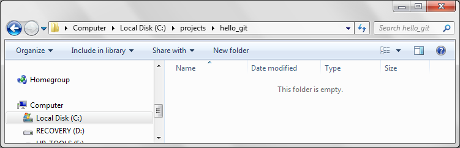
The new hello_git folder can go in pretty much any location on your computer that works for you. When you are done with these instructions the hello_git folder will have a Git repository in it. I put the hello_git folder in a projects folder on the C disk.
2. Right click in the hello_git folder and select "Git Create repository here...".
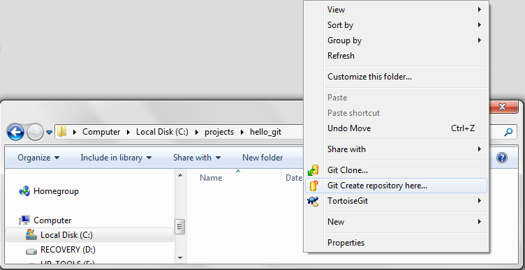
3. The TortoiseGit "Git Init" dialog appears. Leave "[ ] Make it Bare (No working directories)" unchecked. Press the OK button.
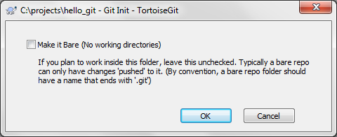
4. The informational message box "Initialized empty Git repository in ..." indicates you successfully created a Git repository. Press the OK button.
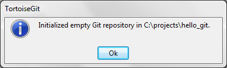
The "Initialize empty Git repository ..." message box is your one sure indication you successfully created a Git repository. The new folder will appear empty or it will show a .git folder. This depends on whether "Show hidden files, folders, and drives" is disabled or enabled.
5. Create a hello_git.txt file in the hello_git folder.
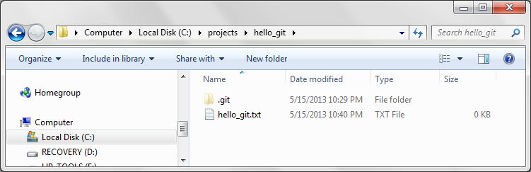
6. Right click again in the hello_git folder. Select 'Git Commit -> "master"...'.
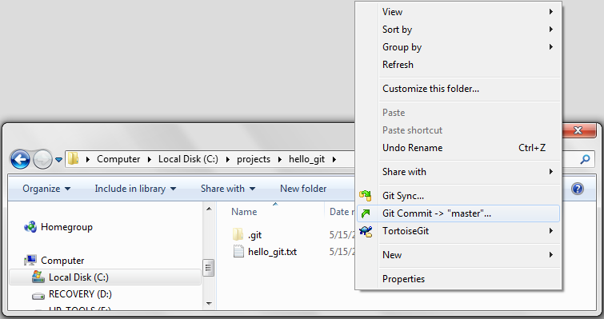
7. A message box appears, "User name and email must be set before commit. Do you want to set these now?". Press the Yes button.
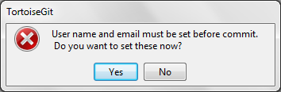
8. In the Settings window type in your "Name:" and "Email:" and press the OK button. I entered Friedbook and friedbook@gmail.com.
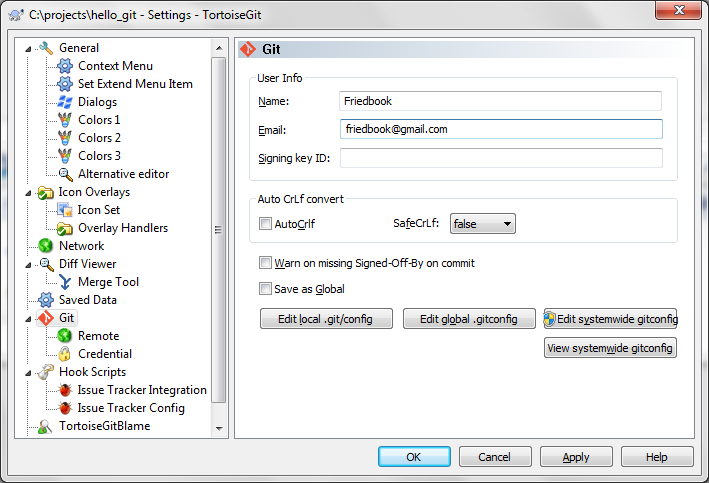
9. In the Commit window check the box by hello_git.txt to commit this file.
Type in the "Message:" area. A short descriptive message is appropriate. In this case I typed "initial commit". Note, the OK button ungrays and becomes selectable once both a file is checked and text is in the message box. Press the OK button.
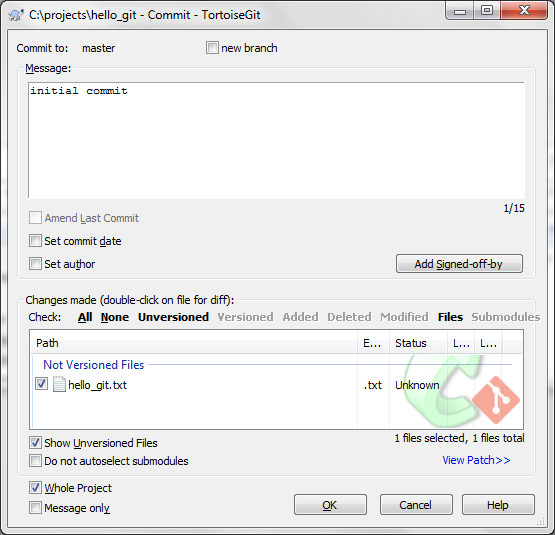
10. In the Git Command Progress window "Success ..." should be indicated. Press the Close button.
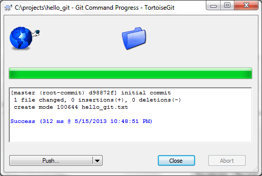
11. In Windows Explorer a green icon overlay on the text document's icon should appear. If it does not move away from the new folder and back to it to force a refresh of the file icon for the new text document.
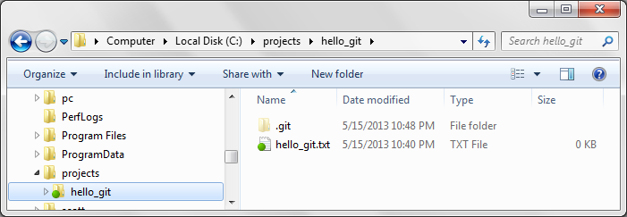
12. Your TortoiseGit green icon overlays may appear different from the green circles shown above. To change your TortoiseGit Icon Set to match above right click in the hello_git folder and select TortoiseGit -> Settings. In the Settings dialog select Icon Set. Select Straight from the drop down list in the upper right. Press the OK button. You likely will have to restart the computer to have the new icon set take affect.
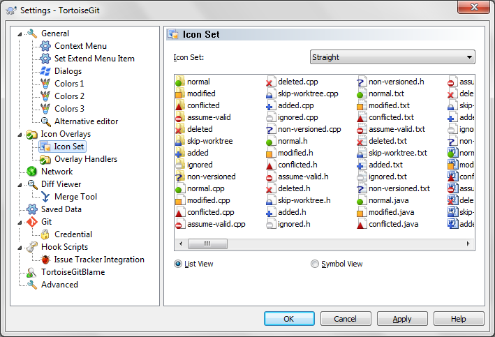
I use the TortoiseGit Straight Icon Set because its plain icons still look good with the small icons of the Windows Explorer details view.
Conclusion
If you have had success with the above instructions then you know Git and TortoiseGit are basically working on your computer. Also you have started using both TortoiseGit and Git. You have
- Created a Git repository.
- Committed a file to the repository.
- Used right click in Windows Explorer to get at TortoiseGit and its presentation of Git commands.
Next, on your own, use TortoiseGit to try other Git commands and learn more about Git.